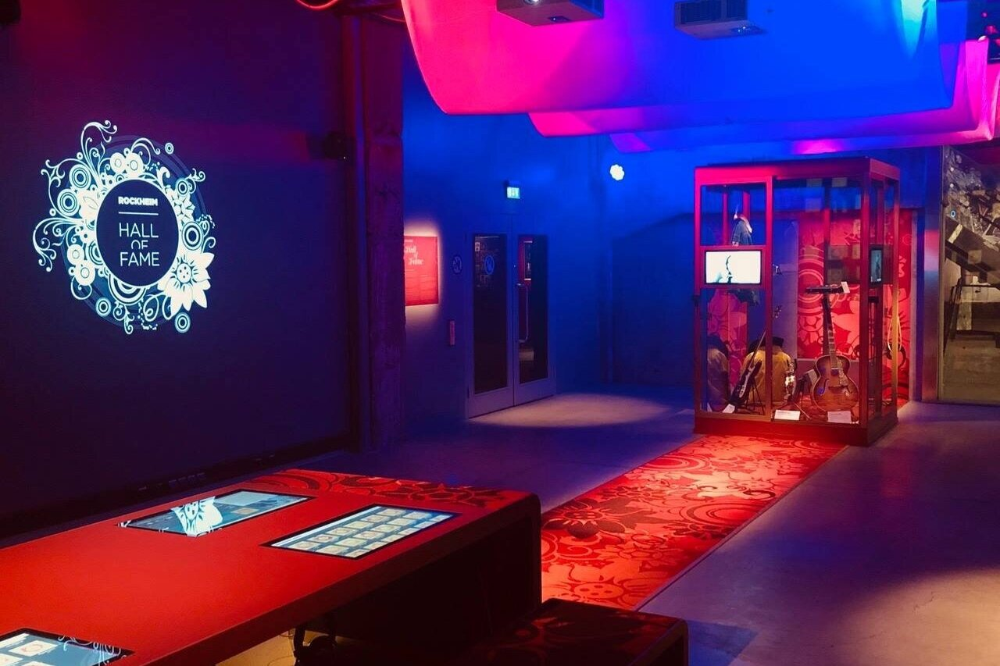
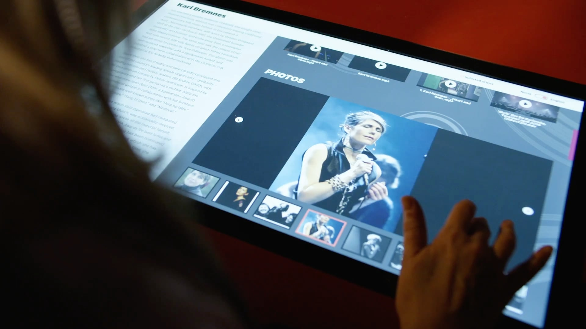
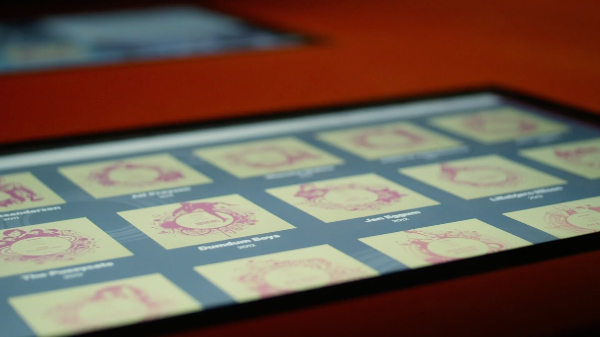

Rockheim Hall of Fame
User Interface Design, Information Architecture, Visual Design

At Back I designed the touch screen experience for Rockheim Hall of Fame. In this screen visitors are able to learn about the inductees and their place in the history of Norwegian popular music.

